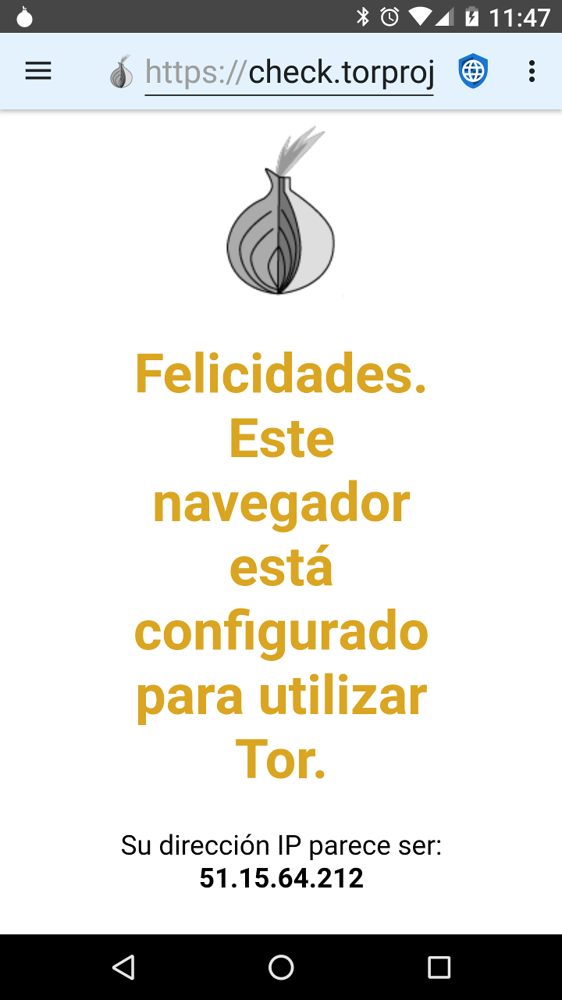
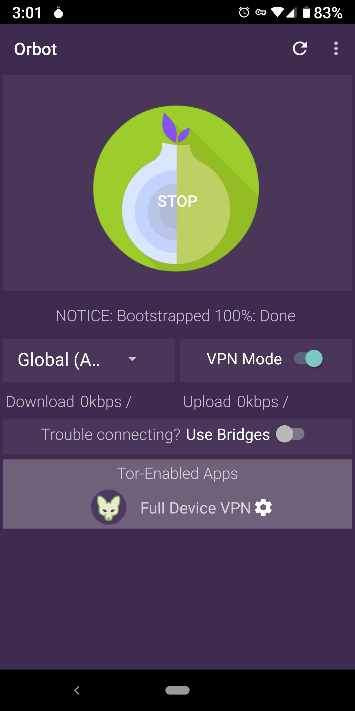

Existen dos categorías generales de malos actores que quieren infringir la privacidad de la web: gobiernos maliciosos con acceso a ISPs (Proveedores de Servicios de Internet) y grandes corporaciones que ofrecen redes sociales y de publicidad. TOR (El Enrutador de Cebolla) es útil en proteger la privacidad de gobiernos maliciosos (que espían el tráfico en tránsito) pero no de grandes corporaciones (que incrustan código malicioso en los servidores web).
Los gobiernos maliciosos a menudo espían a sus ciudadanos para castigar la disidencia o la actividad de derechos humanos. Normalmente suelen operar los ISPs locales o los fuerzan a revelar información mostrando cada dirección IP que visita cada usuario. Tor está diseñado para vencer esta infracción de privacidad encriptando el tráfico del dispositivo de un usuario, enrutándolo a través de tres servidores separados en internet antes de enviarlo al destino final. Esto significa que ningún ISP local, servidor o página web pueden, a la vez, conocer la dirección IP del dispositivo del usuario y la dirección IP del servidor web final. Los gobiernos maliciosos y los ISPs que ellos controlan no pueden decir a qué servidores web está accediendo un determinado usuario, aunque pueden decir que ese usuario está usando Tor. En algunas partes del mundo, usar Tor podría interpretarse como una prueba de conducta ilegal (“si no tuvieras nada que esconder no estarías encriptando tu tráfico”) y los usuarios podrían ser castigados porque los gobiernos asumen que están haciendo algo prohibido. Por tanto, Tor puede ser útil, pero no es la panacea.
Cuando un usuario se conecta a un servidor web, éste puede ver la dirección IP del usuario. Aunque esto no es una ciencia perfecta, las direcciones IP se pueden convertir a direcciones físicas con bastante precisión. Los pequeños servidores web normalmente se basan en las direcciones IP para identificar la ubicación de los usuarios que visitan su web. Tor es una buena solución para ocultar la ubicación del usuario de estos servidores. Pero las más grandes corporaciones que poseen medios sociales y redes de publicidad usan un perfil completo de información diseñado para rastrear a los usuarios a través de los dispositivos y direcciones IP. Estos perfiles emplean una variedad de técnicas para identificar a los usuarios, incluyendo Javascript, cookies, IDs de seguimiento, y huellas del navegador. Debido a que la gran mayoría de páginas web en internet, o cargan un anuncio de una de las principales redes, o integran iconos de medios sociales con su Javascript asociado, estas corporaciones han creado perfiles para casi todos los usuarios en línea y pueden rastrear su actividad en internet a través de sitios que no están relacionados.
Ellos rastrean cada sitio web visitado, todo lo que se compra, cada tarjeta de crédito que es usada para realizar una compra, cada dirección a la que se envían los artículos, y los metadatos GPS de cada imágen que se sube a internet. Construyen un perfil de la edad del usuario, género, estado civil, dirección, afiliaciones políticas, afiliaciones religiosas, circunstancias familiares, número de mascotas, y cualquier otra cosa que caiga en sus manos. Incluso compran bases de datos de transacciones con tarjeta de crédito en tiendas locales, para así poder rastrear de los usuarios en sus perfiles los patrones de compra que hacen cuando no están conectados. Debido a que ya tienen información de dirección mucho más precisa sobre un usuario que lo que pueda revelar una dirección IP, Tor no ofrece una verdadera protección de la privacidad contra las grandes corporaciones.
La única mejor protección de la privacidad contra las grandes corporaciones es navegar por la web con Javascript deshabilitado, seguido de bloquear redes publicitarias, inhabilitar cookies y almacenamiento DOM, y usar un navegador del que sea difícil recoger huellas.
A pesar de sus limitaciones, Tor puede ser útil en algunas circunstancias. El proyecto Tor tiene una app para Android llamada Orbot, que está disponible en F-Droid y en todos los sitios donde se distribuye Navegador Privado. Navegador Privado tiene un ajuste para usar Orbot como un proxy. Cuando se enciende, la barra de aplicaciones de Navegador Privado tendrá un fondo azul claro en lugar del gris claro por defecto. Cuando el ajuste proxy Orbot de Navegador Privado está habilitado, el acceso a internet no funcionará a menos que se esté ejecutando Orbot y esté conectado a Tor. Ya que el tráfico se está enrutando a través de varios nodos Tor, usar Tor es a menudo mucho más lento que conectar directamente a internet.
Cuando Orbot está operando en modo proxy, navegar por Internet usando Navegador Privado será enrutado a través de la red Tor, pero no en el caso de las descargas de archivos. Esto es debido a que Navegador Privado utiliza el gestor de descargas integrado de Android para descargar archivos, que no tiene una opción de proxy. Los usuarios que quieran descargar archivos a través de Orbot necesitan habilitar su modo VPN.
